Our faculty work hard to keep the program running and care about the students they teach. We appreciate the excellent job they do for everyone they work with. Below is a quick biography of each of them.
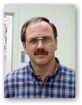 |
Jeff Andersen Jeff Andersen has taught Humanities at Ricks College since 1988, having previously worked for Saudi-Arabian Airlines in Jeddah, Saudi Arabia and International English Institute in Fresno, California. He completed his formal training at Brigham Young University. Brother Andersen currently serves as Chair of the Department of Humanities and Philosophy at Ricks. In addition to Humanities, he has taught German, English, and Religion courses. Brother Andersen has a passion for travel, having visited 29 countries in Europe, Asia, Africa, and the South Pacific. He taught for the BYU Study-Abroad Program in Vienna, Austria and has directed seven student tours to Europe for Ricks College. Climbing a pyramid in Egypt, scuba diving in the Red Sea, and riding an elephant in the jungles of Thailand are among his most memorable experiences. |
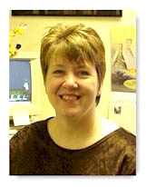 |
Robyn Bergstrom Robyn Bergstrom has been teaching at Ricks since 1994 in the Communication Department. She attended Ricks College, and moved on to Brigham Young University for her Bachelors Degree in Communication with a minor in Psychology and English. She later received a Resource Specialty from the University of Utah, and her Masters Degree is in Communication from the University of North Dakota. She loves teaching both Interpersonal Communication and Small Group Communication. She is the Assistant Coach to the Forensics team, and advisor to the Interpersonal Communication Club. She has worked with the Chicago Urban Studies program, the Humanities tour of Europe, and the Connection program for incoming freshman. She enjoys spending time with her family and friends. She is married to Scott Bergstrom and have four children. Mark, Angie, Alison, and Erik. She loves the statement made by Nelson Mandela. "Our deepest fear is not that we are inadequate. Our deepest fear is that we are powerful beyond measure. It is our light not our darkness, that most frightens us. We ask ourselves, 'Who am I to be brilliant, gorgeous, talented, fabulous?' Actually, who are you not to be? You are a child of God." |
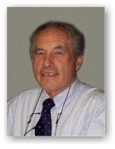 |
Larry Coates |
|
William Conway Dr. Conway earned his Ph.D. in English from the University of Nebraska in 1971 where he attended school on a Tri-University Fellowship. He also has a Masters Degrees from BYU and the University of Hawaii. He taught high school in California and American Samoa before joining the faculty of BYU Hawaii. He has taught a Ricks College for twenty-six years. English 282 , Shakespeare, has been his specialty for the past sixteen years. He has attended the Cedar City Shakespeare Festival many times and has also visited Shakespearean sites in England. He loves teaching Shakespeare. His favorite saying is "So much to learn, so little time." |
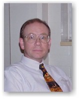 |
John Cullen John F. Cullen, Jr. was graduated from the State University of New York at Stony Brook with a B.S. in chemistry. Born in southern New York and raised in Syracuse, NY, he received his Ph.D. from Cornell University (located in Ithaca, NY) in 1983. Dr. Cullen has taught chemistry for over 20 years at various levels ranging from high school to four year universities. Each summer he returns to Cornell University to either teach chemistry or assist in the department's graduate teaching assistant training program. He has been at Ricks as a member of the chemistry faculty since 1988 and has served as the chairman of the chemistry department for the past 5 years. |
|
Rick Davis
Home Page Rick Davis may have grown up in Rexburg but he has seen the world. His mission was in France and Switzerland where he gained his love for Europe. He holds degrees from the University of Idaho and Arizona State and was in law school when he was drafted into the Viet Nam War in ‘68. Since coming to Ricks in 1971 he has taught courses in Western Culture, Humanities, Music Appreciation, and Piano, the latter being something he has played and enjoyed his entire life. He served as Chairman of the Humanities department for 14 years, and is currently the Director of the Honors Program. A lover of diversity, he has participated in departmental tours to Europe, co-authored two books, owns and operates a professional photography studio, currently serves as the Madison County Coroner, a post he has held for 20 years, and just this past spring was the narrator/bass soloist in the college’s production of Immanuel. Favorite quote: "Men should be anxiously engaged in a good cause, and do many things of their own free will, for the power is in them." |
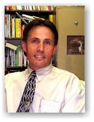 |
Michael Farnworth I started teaching at Ricks in 1976. My degrees are in educational psychology, family life education and child development and family relations. I am a faculty member in the Family Science Department and teach child development and dating/marriage preparation. I have trouble relating to vain and grandiose students who do not enjoy learning. if you do enjoy learning... welcome, welcome, welcome. One of my favorite quotes: "Daring as it is to question the unknown, even more so it is to question the known." - Kasper |
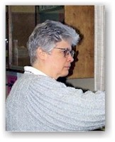 |
Lynn Firestone I started my road to the Ricks College biology department when I enrolled at Slippery Rock University in Western Pennsylvania where I was raised. After attending Slippery Rock University for two years, I was introduced to the Church of Jesus Christ of Latter-Day Saints through my brother and a set of missionaries. I was a "golden contact" and quickly joined the Church. I immediately made plans to transfer to BYU where I finished my Bachelor’s program in Secondary Education, Zoology. I then remained at BYU and earned a Masters Degree in Botany, doing my research in genetics and mine reclamation studies. Next , I migrated north to Utah State where I began a Ph.D. in genetic engineering. However, when my major professor left biology to become a Computer Science teacher, I was left high and dry. I then began a program in Plant Systematics. I later transferred to Idaho State University where I received a Doctorate of Arts degree in Biology. While I was working on my doctorate at ISU, I became aware of a position here at Ricks and "the rest is history", as they say. My first love is botany but I have received thorough training in 11 different areas of biology. I sincerely enjoy being a part of the honors program because of the dedicated and motivated students who respond well to my philosophy of teaching students how to appreciate their ability to THINK and to become lifelong learners. |
|
Victor G. Forsnes Brother Forsnes has taught at Ricks College since 1981. Prior to that, he was an Area Director and College Park Institute Director for the Church Educational System in the Washington, D.C. area, a professor at the University of Maryland, and an instructor at Purdue University and Brigham Young University. He is currently chair of the engineering department at Ricks, was director of the Summer Honors Institute for thirteen years, a continuing participant in the Faculty Cohorts program, a member of the Forum committee, and advisor to the Phi Theta Kappa honor society. He attained the Ph.D. degree in fluid mechanics and applied mathematics from Purdue University and also has degrees from Brigham Young University. At Ricks, he has taught courses in engineering, religion, cultural anthropology and letters. An ex-bishop on campus, he serves now on the Rexburg East Stake high council and in the Idaho Falls Temple. Personal saying: "Let’s give the tithe-payers of the Church a great return on their investment in Ricks College...and we were on the winning side in the war in Heaven, so let’s do something with the freedom we preserved and turn it into productive moral agency." |
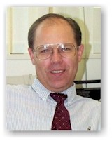 |
Gerald Hansen I was born in Munich, Germany and grew up in Nebraska, Iowa, and Arizona. I served a Mission in Geneva, Switzerland. I am currently married with 8 children. I hold a BA in English from Eastern Oregon State College, and MA in English from BYU. I have taught 5 years at Kuna, Idaho seminary, 4 years at the Institute at Purdue University, and 10 years at Ricks. I like teaching honors because of the deeper insights of the students. |
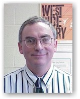 |
Kip Hartvigsen |
|
Randy Hayes |
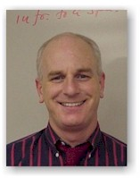 |
Murray Hunt Although a native of Idaho, I grew up in the San Francisco Bay Area before serving a mission to Winnipeg, Canada. I returned to the Bay Area for a graduate degree in Humanities and Philosophy from Stanford after marrying my girlfriend, Maryjo Colton, and graduating from BYU. Before landing at Ricks, however, I raked leaves for my mother, delivered newspapers and pizzas, wrote procedures for purchasing frozen lunches at a top-secret government installation, and taught at Washington State University--whatever it took to support our nine children. I thoroughly enjoy Rexburg, Ricks, and the wonderful students (especially those in the Honors Program). My goal in the classroom is to make the academic experience exciting, interesting, and lively, but demanding; for if learning isn’t a joy, then students will not choose to do it on their own out of the classroom, which is what a higher education really ought to be about after all. |
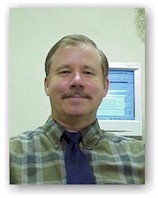 |
Bron Ingoldsby I received my Ph.D. in Child & Family Development from the University of Georgia in 1979. It was there that I developed my interest in the cross cultural family, which recently resulted in the writing of a text book in the field (Families in Multicultural Perspective, Guilford 1995). I taught at Kent State University for four years before coming to Ricks College, where I am presently the chair of the Family Science department. I have been a member and officer in a number of professional organizations (the National Council on Family Relations; Partners of the Americas) and have over 30 professional research publications. I also love to teach about family systems dynamics |
| Brian Merrill |
|
Randall Miller Randall Miller completed
his bachelor's and master's degrees in |
|
David Peck I was born in Salt Lake City, and completed four years at Brigham Young before my peers began the fourth grade! (I went to Brigham Young Elementary School, a "Lab School" operated by the Education Department at BYU, from Kindergarten through Third Grade, when the Lab School was closed). After High School, I attended the University of Utah, and obtained a Bachelor;s Degree (History, 1982), a Master's Degree (Middle East Studies - History, 1985) and a law Degree (1988). I am currently completing a dissertation to obtain a PhD in history of the Modern Middle East. I began working at Ricks in 1992. I have taught courses in three different areas of study: Music (my hobby is singing opera), Honors and History. I am currently a member of the History faculty, and teach World Civilization (History 110 & 111). The honors classes I have taught include an historical survey of the Israeli/Palestinian Peace Process, Constitutional issues (14th Amendment & abortion) and Ethics (Physician Assisted Suicide). In 1980 I married Rachel Raty (Ricks College Spanish faculty). I have five children and a cat. |
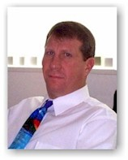 |
Bruce Satterfield Bruce Satterfield did his undergraduate and graduate work in the States and the Middle East. His education has centered on Old and New Testament studies. He received degrees in Anthropology, Archaeology, and Ancient Near (or Middle) East studies. As part of his studies he was trained in Biblical Hebrew and New Testament Greek. While in school in Jerusalem in 1979, Bro. Satterfield met his wife, Carol. Their courtship took place in Israel and Europe. They were engaged in Scotland and married in the Idaho Falls Temple by his father, Homer Satterfield, who was a sealer in the temple. They have five children: Rivka, Samuel, Benjamin, Sheynah, and Neisah. Bro. Satterfield taught seminary and institute in the Church Educational System for ten years fulfilling various assignments in Arizona and Idaho. He presently a faculty member of the Department of Religious Education at Ricks College. Bro. Satterfield teaches Biblical Hebrew in the Honor’s program. He does not believe that understanding Hebrew or Greek is essential to scripture study, but he has found that understanding these languages does help in understanding the Bible better. Therefore, he enjoy’s teaching the Biblical languages and helping students come to understand Hebrew thinking. |
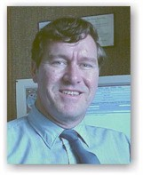 |
Dan Thomas |
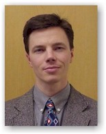 |
John Thomas |
|
Larry ThompsonI love teaching Ancient World 200 and Modern World 201. We try to build pigeon boxes--a chronology--into the two courses, but we are more interested in the unfolding of ideas which impact us. Lecture-discussion along with student presentations works best in my classes. Finally, I'm not into guesswork in my classes: I let you know what I want you to know. Remember what I tell you and you're home free with an A. |
|
Eric WalzEric Walz has been teaching at Ricks since 1987 in the History Department. Early in his academic career he graduated from Ricks before going on to receive a Bachelors Degree in History from Idaho State University, a Masters Degree from Utah State University, and a Doctorate Degree in History from Arizona State University. In graduate school, Brother Walz's major areas of study included Modern U.S. History, the History of the American West, and the History of Modern Japan. His personal research focuses on Japanese immigration to the United States between 1882 and 1924 and the development of ethnic communities in the states of Arizona, Colorado, Idaho, Nebraska, and Utah. Bro. Walz has presented papers in conferences in New York City; Ann Arbor, Michigan; and Sacramento, California. He has several published articles in professional journals and is expecting the publication of his first book in the near future. His greatest joy, however, is getting to know the students at Ricks on a personal level. Eric and his wife Lynne have seven children, five girls and two boys, ranging in age from twenty-two to seven. They also have one granddaughter. |
|
David Ward
Notwithstanding the fact that I have graduated from Brigham Young University with a Masters degree in American Literature and Composition Philosophy, and from The University of Michigan with a Ph.D in English and Education, I continue to feel like a kid in an adult world. Perhaps this is why I live to learn from a variety of sources. However, this zeal for learning didn’t begin in elementary school. In fact, I don’t think I ever experienced the excitement endemic to genuine learning until college–particularly during my graduate work at the University of Michigan. There my eyes were opened to the marvel of making connections between myself and a myriad of ideas. Those who shared their ideas in speech and in print were often on the cutting edge of their discipline of their time. Whether it was in science history, in art history, in language, in myth and culture, in the philosophy of education, in social psychology, in music, music history, or in religion, I became enamored of the transforming power of creative thought as manifest by the miracle of the spoken and written word. Consequently, in all of what I teach--in my writing classes, my literature class, my reading class, my C.S. Lewis class--I am moved to invite my students into the wonder of thinking for themselves while I teach to develop in them a commitment to pay the price necessary to connect authentically with wisdom greater than themselves. |